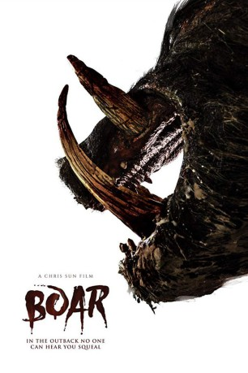
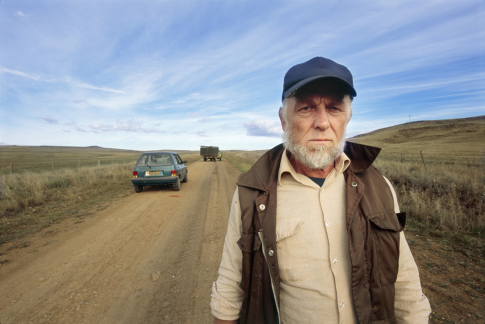

#10111 Boar
 
 IMDB-Wertung: 5.1 / 10
IMDB-Wertung: 5.1 / 10  Tomatometer: 56
Tomatometer: 56  Metascore: 0
Metascore: 0 
In the harsh, yet beautiful Australian outback lives a beast, an animal of staggering size, with a ruthless, driving need for blood and destruction. It cares for none, defends its territory with brutal force, and kills with a raw, animalistic savagery unlike any have seen before.
Jahr: 2017
Dauer: 96 Minuten
FSK: 18
Land: Australien Studio: Meteor FilmTonspuren: DTS - ,
Untertitel: Deutsch,
Auflösung: 1080p (1920x800) Größe: 6082 MB
Genre: Horror
Regisseur: Chris Sun
Drehbuch: Kirsty Dallas, Chris Sun
Soundtrack: Mark Smythe
Darsteller:
 Nathan Jones als Bernie
Nathan Jones als Bernie Bill Moseley als Bruce
Bill Moseley als Bruce John Jarratt als Ken
John Jarratt als Ken- Christie-Lee Britten als Ella
- Steve Bisley als Bob
-  Chris Haywood als Jack
- Roger Ward als Blue
- Ernie Dingo als Ernie
- Simone Buchanan als Debbie
- Madeleine Kennedy als Hanna
- Chris Bridgewater als Ryan
- Hugh Sheridan als Robert
- Trudi Ross als Wendy
- Damian Duffy als Damo
- Melissa Tkautz als Sasha
- Sam Coward als Matt
- Ricci Guarnaccio als Oscar
- Debbie Rivers als Anna
- Sheridyn Fisher als Sheridan
- Justin Gerardin als Edward
- Greg Stuart als Dirt Bike rider
- Andrew Keating als Pub Goer 11
- Griffin Walsh als Bart
- Julie Walker als Pub Goer 1
- David Kilpatrick als Pub Goer 10
- Emily Williams als Passenger
- Aaron Daniel als Pub Goer 14
- Ashley Summers als Pub Goer 20
- Fred Neilson als Pub Patron
- Rob Stanley als Pub Goer 31
- Maddy Exarhos als Pub Goer 3
- Michelle Coyle als Pub Goer 21
- David Hall als Pub Goer 13
- Paula Wootton als Pub Goer 2
- Jennifer Sellwood als Pub Goer 27
- Ashlea Gierke als Radio Voice 3
- Ricky Greensill als Pub Goer 23
- Tony Lysdonk als Pub Goer 28
- Sandra Flynn als Pub Goer 4
- Joy Cronin als Pub Goer 7
- Jason Sellwood als Pub Goer 30
- Chris Sun Snr als Truck Driver
- Karleen McTaggart als Pub Goer 29
- Ark Tribe als Pub Goer 17
- Dave Matthews als Radio Voice 2
- Kristine Sellwood als Pub Goer 26
- Lyn Neilson als Pub Patron
- Anthony Lyttle als Pub Goer 15
- Teresa Cronin als Pub Goer 5
- Debra Witteman als Pub Goer 12
Datei: X:\FSK18-2017\Boar (2017, FSK18, 1920x800).mkv seit 05.12.2018
Festplatte: FSK18
 Es gibt insgesamt 24 Filme in der Gruppe 'FSK18-2017'
Es gibt insgesamt 24 Filme in der Gruppe 'FSK18-2017'